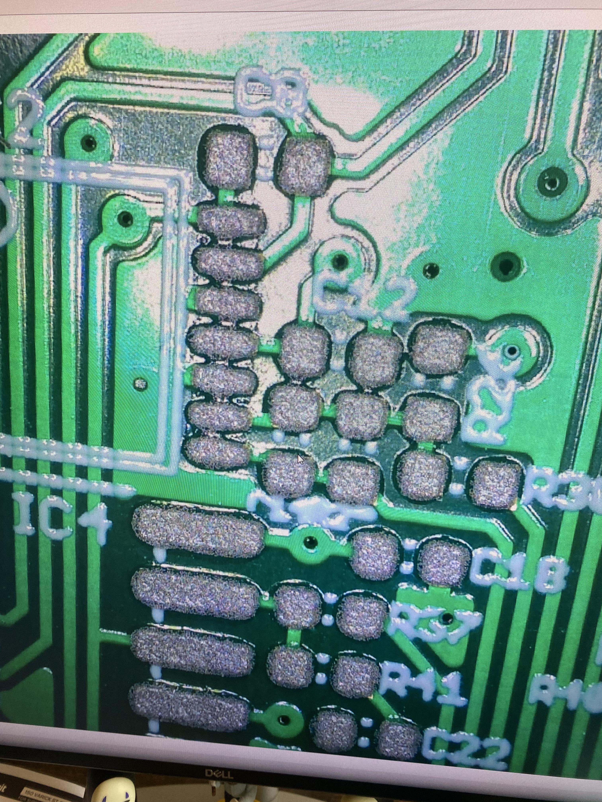
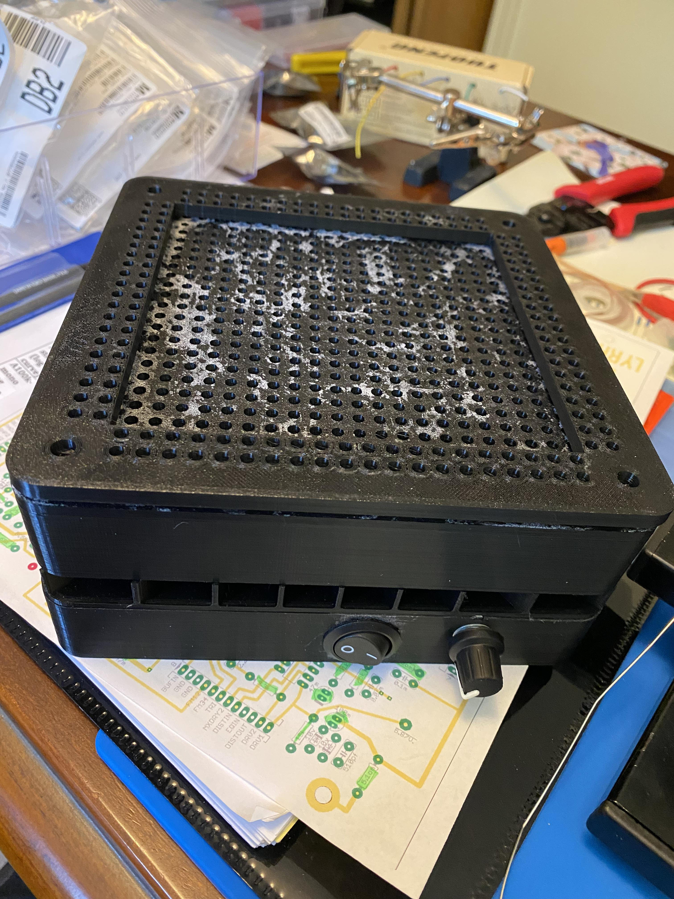

Mutable Instruments Eurorack Clones
Overview
I assembled three Eurorack modules based on Mutable Instruments designs: Veils, Blades and Marbles. The PCBs are purchased clones of the Mutable Instruments boards and the firmware was provided, so my work was the assembly, the tooling, and the debugging. I stopped testing in early 2026, and none of the three is fully working.



Assembly Process
Stencil holder. I built a cordless vacuum holder for the solder paste stencil. An impeller inside pulls the stencil straight down onto the PCB so it doesn't bend at the sides; the video above shows it running. It uses a drone motor, a flight controller, a micro Pi and LiPo batteries. I built it from open-source CAD models, a YouTube video, a BOM, and poorly documented wiring, and each PCB size needed its own custom PCB holder. To print accurate parts I had to get my Ender 3 dimensionally accurate. The full print took about 30 hours and several iterations.
Assembly. I had the stencil manufactured and applied the solder paste through it. I placed every component by hand with tweezers and reflowed the boards on a hot plate. I reworked problem areas with a soldering iron and hot air, and soldered all of the through-hole parts myself.
Debugging Status
- Veils: Channels 3 and 4 showed unexpected resonance and clipping. I traced it to two reversed diodes and corrected one. The other flew off the board and was lost, so I was never able to tell whether those two diodes were the only fault.
- Blades: Audio passes through, but the filtering does not work. Voltages were in the normal range at every IC. With a square wave into the left-hand filter, the signal came out as a triangle wave while the probe was on the IC. I did not find the cause.
- Marbles: Not tested. It needed firmware flashed, and I had not worked out how to test it before the pots were soldered on.